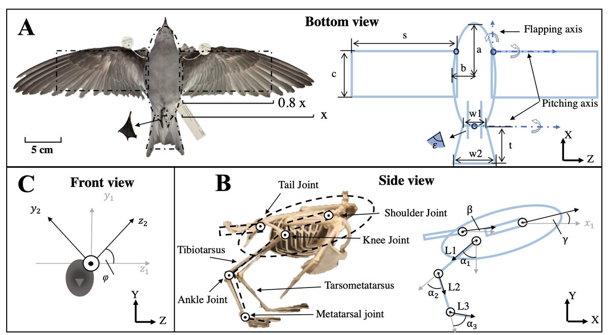
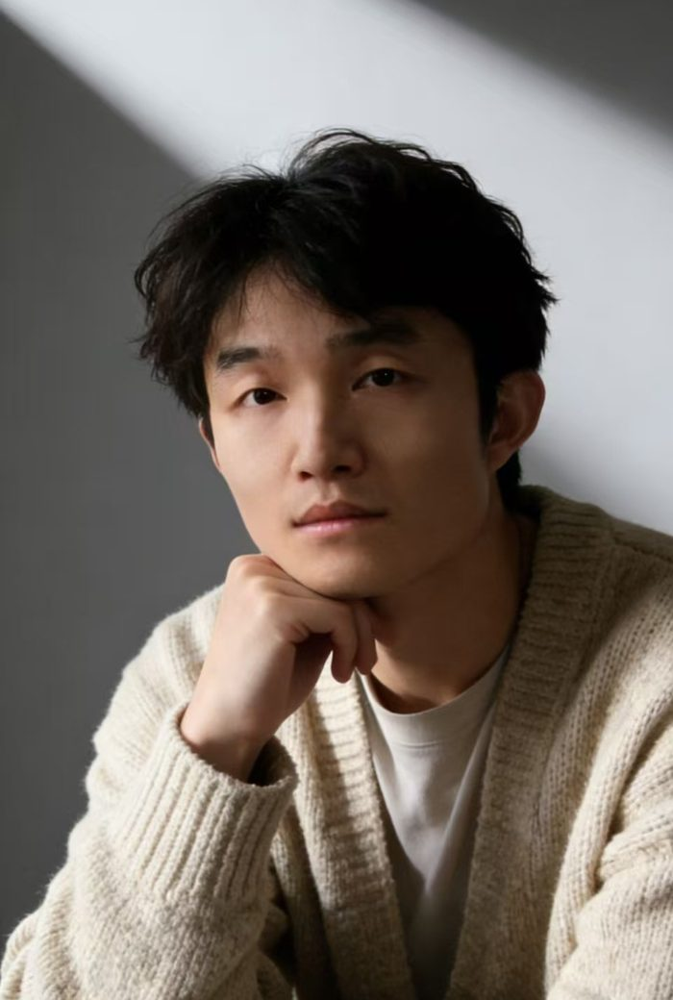

I study how robots learn to move in real fluids. At Westlake University’s i4FSI Lab, advised by Prof. Dixia Fan, I develop experimental learning platforms, hydrodynamic models, and safe control for bio-inspired swimmers.
I am also a visiting scholar at Penn State University (May–October 2026), studying how centipedes swim across Reynolds numbers.
Bio-inspired robotics
Reinforcement learning
Physical learning in real fluids
Data-driven hydrodynamics
Legged swimming
2ICRA papers 2025 · 2026
3submissions under review ICRA 2027 ×2 · ICLR 2027
REEF is now public on arXiv — a high-throughput physical-learning platform that lets robots exploit unsteady vortices for propulsion.
Submitted two papers to ICRA 2027 and the HydroWrench dataset & benchmark to ICLR 2027.
Swimming Under Constraints (safe RL for a quadrupedal swimmer) accepted to ICRA 2026, Vienna.
Earlier updates
Started a visiting-scholar stay at Penn State University (May–Oct 2026).
Learn to Swim presented at ICRA 2025, Atlanta.
Storm-petrel DRL paper published in Bioinspiration & Biomimetics (co-first author).
Research
Animals do not suppress the vortices they shed — they ride them. Engineered swimmers usually treat the same flow as a disturbance. My work asks how a robot can learn to use it, when real-fluid data are scarce and simulation is either too slow or too wrong.
01 · Physical learning
Learning directly from real fluid
Instead of learning in a simulator and hoping it transfers, I learn in water. REEF couples SHOAL, an eight-channel high-throughput array for real fluid–structure interaction, with V-STAR, a staged imitation → offline → online learning algorithm. Across lift-, drag- and jet-based propulsors it more than doubles the attainable force envelope of parameterized search, and PIV shows the gains come from coordinated vortex formation. The same data infrastructure underlies HydroWrench, a 116k-trajectory benchmark for dynamic load reconstruction.
REEF (arXiv 2026) · HydroWrench (ICLR 2027, under review)
02 · Legged swimming
A quadruped that learns to swim — from model to route
One webbed-foot quadruped platform, three layers of autonomy. Learn to Swim replaces empirical drag formulas with an LSTM hydrodynamic model trained on tank experiments, cutting straight-line deviation and turning time by ~47%. Swimming Under Constraints learns gaits on hardware with a PID-regulated Lagrangian safe-RL method that maximizes thrust while bounding destabilizing lift. From Gaits to Routes composes those gaits into execution-aware route following (82.5% vs 10.5% strict success over direct PPO).
ICRA 2025 · ICRA 2026 · ICRA 2027 (under review)

03 · Locomotion across interfaces and scales
What animals can teach a controller
Storm petrels "walk" on the sea surface and use their feet as anchors in the wind. With a 9-DoF morphological model and a hybrid aero–hydrodynamic force model, we used deep reinforcement learning to reproduce both pattering and sea-anchoring and to explain the gaits the birds choose. At Penn State I am now studying the stone centipede, which swims head-first on a tail-to-head body wave — a reduced-order model reproduces its speed and pins the thrust on its legs.
Fei Han*, Xinyu Cui*, Zhipeng Wang*, Ning Yang, Hang Xu, Haifeng Zhang, Zhongming Hu, Jun Wang, Junfeng Du, Dixia Fan✉
REEF = SHOAL (8-channel real-fluid array) + V-STAR (staged learning). More than 2× the force envelope of parameterized search; force-trained policies transfer zero-shot to free-swimming robots.
ACPPO-PID: constrained PPO with a PID-regulated Lagrange multiplier, trained on hardware in a towing tank; higher thrust efficiency with suppressed lift oscillation, transferred to free swimming.
FED-LSTM, trained on leg-force and body-drag tank data, replaces empirical formulas for NSGA-II gait optimization: +47.1% straight-line accuracy and 47.6% faster turns on hardware.
From Gaits to Routes: Execution-Aware Hybrid Behavior Planning for Quadrupedal Swimming with Experiment-Calibrated Hydrodynamics
Hybrid behavior commands + predictive skill distillation into a 50 Hz policy; 82.5% strict route-following success vs 10.5% for direct PPO in 720 matched episodes.
Under review ICLR 2027
HydroWrench: A Dataset and Benchmark for Dynamic Load Reconstruction in Bioinspired Aquatic Mechanisms
116,756 command–load trajectories from caudal-fin, webbed-foot and flipper mechanisms with measured six-axis loads, plus a shared benchmark protocol.
Collaborations
PoF 2023 Physics of Fluids 35(10), 101914
Force Decomposition on Flapping Flexible Plate via Impulse Theory and Dynamic Mode Decomposition
See our quadrupedal swimmer in action: learned hydrodynamic modeling at ICRA 2025 and safe on-hardware reinforcement learning at ICRA 2026.
ICRA 2025 Learn to Swim
ICRA 2026 Swimming Under Constraints
Experience & Education
Visiting Scholar · Penn State University
Centipede swimming across Reynolds numbers; reduced-order hydrodynamic modeling.
Ph.D. Student · Westlake University
Computer Science and Technology, i4FSI Lab (advisor: Prof. Dixia Fan). Learning and control for bio-inspired swimming robots.
Research Assistant · Westlake University
Experimental data processing and paper writing for bio-inspired robotic systems.
M.Eng. · University of Chinese Academy of Sciences
Pattern Recognition and Intelligent Systems. Deep-sea soft gripper for non-destructive grasping.
B.Eng. · Zhengzhou University
Measurement and Control Technology and Instruments. RoboMaster robotics competition.
Beyond the Lab

Outside research I train, play badminton and sing — I spent a year with the Xinyue Choir — and I take a camera almost everywhere. Photography has quietly shaped how I make figures for papers.
@article{han2026reef,
title = {Embracing Flow Unsteadiness: A High-Throughput Learning Platform Enables Vortex-Exploiting Bioinspired Propulsion},
author = {Han, Fei and Cui, Xinyu and Wang, Zhipeng and Yang, Ning and Xu, Hang and Zhang, Haifeng and Hu, Zhongming and Wang, Jun and Du, Junfeng and Fan, Dixia},
journal = {arXiv preprint arXiv:2609.14254},
year = {2026},
doi = {10.48550/arXiv.2609.14254}
}
@inproceedings{cui2026swimming,
title = {Swimming Under Constraints: A Safe Reinforcement Learning Framework for Quadrupedal Bio-Inspired Propulsion},
author = {Cui, Xinyu and Han, Fei and Xu, Hang and Zeng, Yongcheng and Sun, Luoyang and Zhang, Ruizhi and Zhao, Jian and Zhang, Haifeng and Li, Weikun and Chen, Hao and Wang, Jun and Fan, Dixia},
booktitle = {2026 IEEE International Conference on Robotics and Automation (ICRA)},
year = {2026},
note = {arXiv:2603.04073}
}
@inproceedings{han2025learn,
title = {Learn to Swim: Data-Driven LSTM Hydrodynamic Model for Quadruped Robot Gait Optimization},
author = {Han, Fei and Guo, Pengming and Chen, Hao and Li, Weikun and Ren, Jingbo and Liu, Naijun and Yang, Ning and Fan, Dixia},
booktitle = {2025 IEEE International Conference on Robotics and Automation (ICRA)},
pages = {10261--10267},
year = {2025},
doi = {10.1109/ICRA55743.2025.11128080}
}
@article{xue2023exploring,
title = {Exploring storm petrel pattering and sea-anchoring using deep reinforcement learning},
author = {Xue, Jiaqi and Han, Fei and Klaassen van Oorschot, Brett and Clifton, Glenna and Fan, Dixia},
journal = {Bioinspiration \& Biomimetics},
volume = {18},
number = {6},
pages = {066016},
year = {2023},
doi = {10.1088/1748-3190/ad00a2}
}